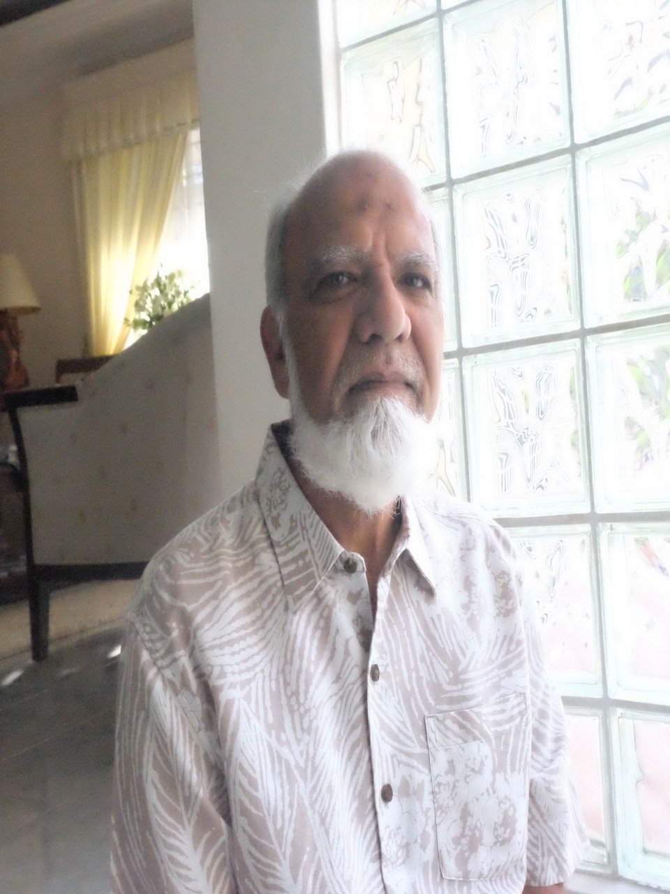
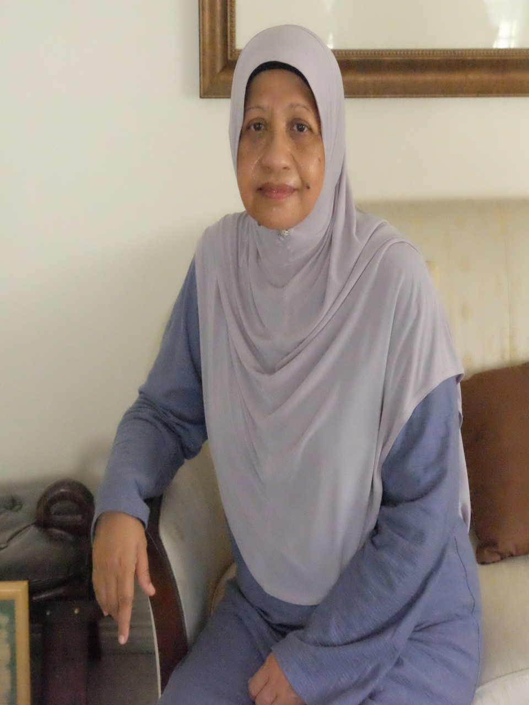
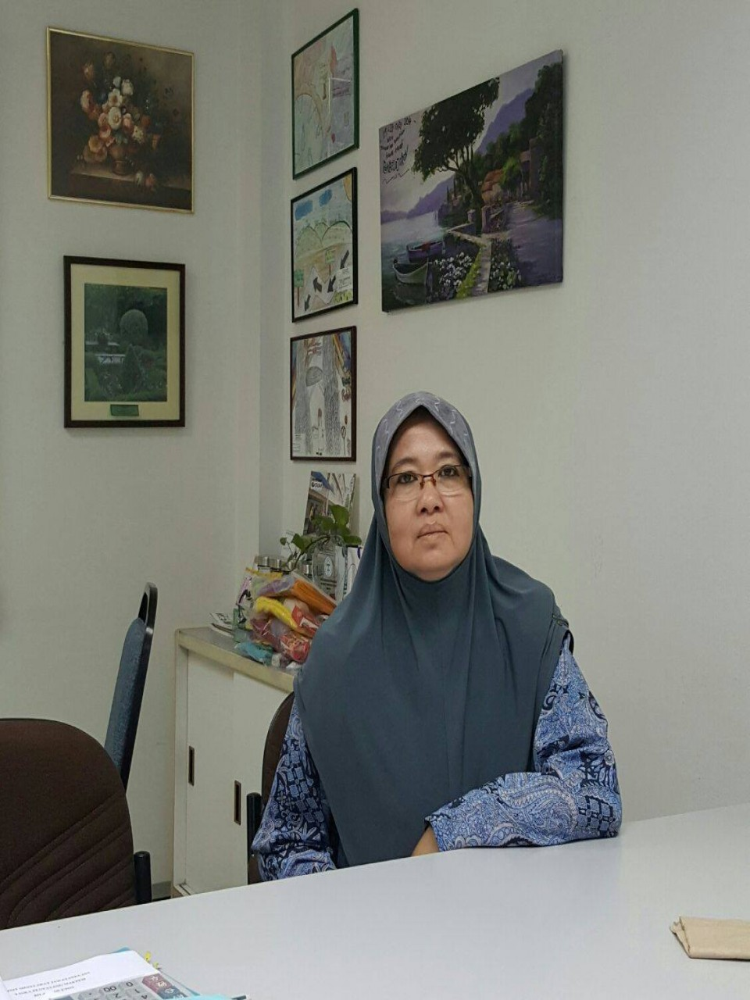
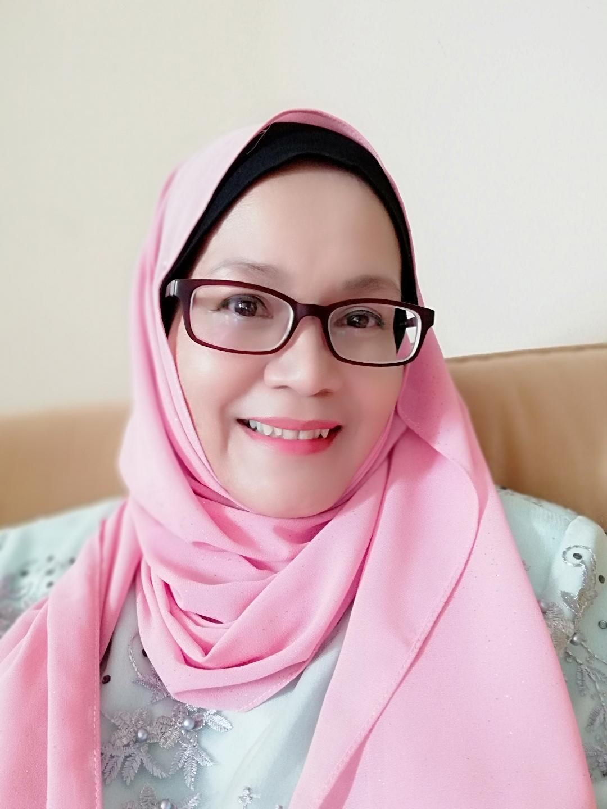

No. 3, Jalan Kent 2, Off Jalan Maktab, 54000 Kuala Lumpur
+603-26915246
About Us
Mission
To help improve the basic living standards of as many needy people in our community as possible.
Vision
To empower a larger number of needy folks in our target groups by providing financial aid, material support, up-skilling programs, counseling & advisory services in order to enable them to better meet their basic standard of living and lead a more meaningful life.
Committee members

AMYN HUSSAIN
FOUNDER & ADVISOR

AMINAH BINTI MAT
FOUNDER & PRESIDENT

SITI HAWA BINTI ADNAN
HON. SECRETARY GENERAL

FATIMAH BINTI ALI
HON. TREASURER
From the desk of the founder/president
I started my journey in welfare work from the early 1980's. My husband and I have been helping others in very small ways in the beginning. As time went on, we gradually increased the extent of help and widened our reach to touch more peoples' lifes. We enlisted the help of our relatives, close friends and neighbors along the way to extend our help to even broader groups. The focus of our help was on the poor, single mothers and the handicapped in our local community.
This journey of ours culminated in 2006 when my husband and I formed An-Najjah. We registered with the registrar of societies (ROS) and started a modest home for poor and orphaned boys. My husband became the founder/adviser and I the founder/ president of An-Najjah Wilayah Persekutuan, Kuala Lumpur (WPKL)
This journey we took was a very challenging one with many hills to climb. In the initial years we were primarily self- funding. Eventually though our network of support expanded and we got funding help from more friends as well as from our charity bazaar type activities. Small donations from Corporations also followed; and our reach expanded, enabling more needy folks to be helped.
In 2011, 6 years after our existence as a registered NGO, An-Najjah WPKL became An-Najjah Malaysia- another major milestone for us. We have branches today in WPKL, Selangor, Perak & Negeri Sembilan. 2011 also saw An-Najjah being awarded the first prize for the best-run welfare NGO in WPKL as conferred by the Welfare Ministry of Malaysia. In 2012 we opened a girls orphanage at Bukit Indah Ampang where we can accommodate upto 35 girls. This is also an important milestone for us.
We take great pride in all the strides we had made since our humble beginnings, and hope to grow even further. The main focus of our help continues to be for our primary target groups which is described further in other pages of this website.
From the desk of the founder/advisor
Dear Committee Members, Volunteers and friends, warm greetings!
Doing welfare work is exciting! It is self-fulfilling and very satisfying to be able to touch other peoples' lifes positively. Help we must, at every opportunity we get, for this is the very mission for all of us as care givers. Our path will nevertheless be filled with challenges. If we remain patient , resourceful and resilient , we shall overcome them.
From my working experience and in the course of my work at An-Najjah Malaysia, I have noticed some excellent character traits in my co-workers and the people I come in contact with. These people continue to inspire me and I would like to share some of their traits with you:
I am always impressed by people who are sincere and down to earth in whatever they do. They always choose to do whatever is right (which is often difficult) not just what is easy or convenient. They neither have any quest for personal glory nor do they have any personal agenda. These people are my role-models.
I always admire people who are welfare-minded and compassionate. They are always prepared to sacrifice their own time, energy and financial resources for the well being of other people. They expect no returns or gains, not even thanks from anyone.
I am always humbled by people who place others above them. Their humility shows a remarkable strength of character and nobility. The help they give is not just because the other person is needy but more because it is a discharge of what is truly their duty.
In our line of work, we often have to work in teams and through committees. I have learned that the best way to instill team work and harmony is to avoid conflict and friction. It is not always about who is right but more about what is appropriate; and often it is better to be kind than to be right. Furthermore people always respect the ones who try to build common ground and who refrain from taking credit or from going after positions. It is these people who make the entire team successful.
I am happy to have had the opportunity to observe the excellent traits of other noble souls as a lesson and reminder to me. I hope that these examples inspire you as much as they have inspired me.
So let us all spread the goodness around us, help the needy and make a difference in other peoples' lifes as much as we can. I wish you well in this exciting journey of yours...